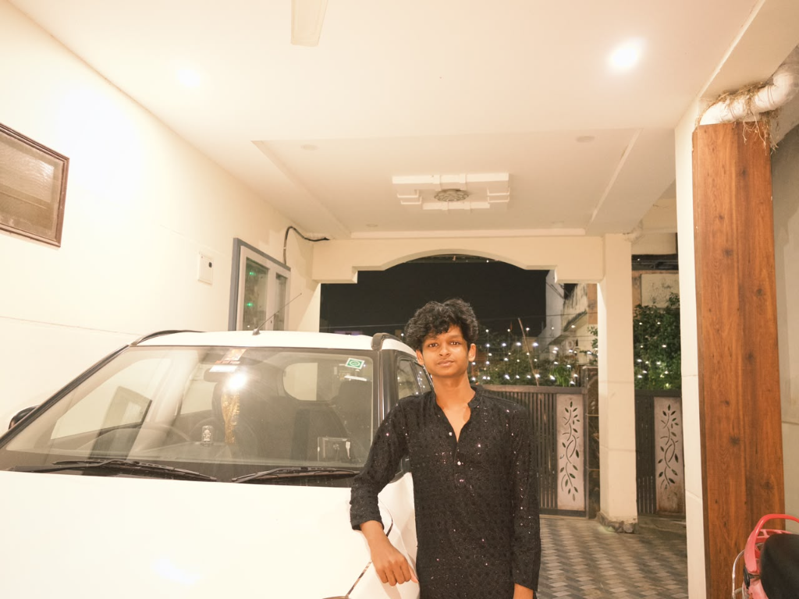

A traditional art portfolio
Every face holds a story.
Karthik explores the quiet character of a face through traditional portrait drawing, graphite studies, color, and expressive observation.
Browse by feeling
The collections.
Four ways into Karthik’s practice, each rooted in the real works gathered in this portfolio.
A closer look
Selected works.
The collection
Complete collection.
A considered home for portrait studies, facial expressions, traditional color work, and character sketches.

About Karthik
The artist behind the portraits.
I'm Karthik, a traditional artist drawn to the art of capturing faces, expressions, and the emotions that make every person unique.
For me, a portrait is more than a representation of someone's appearance. It is an opportunity to pay attention to the small details that give a face its character—the expression in the eyes, the structure of the features, the relationship between light and shadow, and the subtle differences that make each subject distinctive.
My interest in traditional art comes from the experience of building an image through observation, patience, and careful attention to detail. I enjoy the process of developing a portrait step by step, refining the forms and expressions until the artwork feels complete. I want my work to communicate not only what a person looks like, but also something of the feeling and personality suggested by their expression.
As I continue to develop my artistic practice, I want to strengthen my drawing skills, explore new ways of expressing emotion through portraiture, and create a body of work that reflects my growth and individual artistic direction.
This portfolio brings together my work, my interest in portrait art, and my ongoing journey as an artist. Each piece is an opportunity to learn, improve, and express something through the simple but meaningful act of drawing a face.
Open for conversation
Let’s talk about artwork and collaborations.
For enquiries, collaborations, or to follow Karthik’s work, use one of the links below.